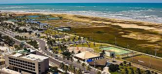

Praia de Atalaia

Na Orla de Atalaia existe opções de lazer como bares e casas de dança e música, além de barracas de água de coco e quadras de basquete futebol, tênes e uma pista de skate. Considerada uma das mais bonitas do Brasil oferece aos cidadãos e turista o que há de melhor em lazer e entreterimento
Roteiro Turistico em 1 dia
- Café da manha em uma das barracas da orla.
- Caminhada até os Arcos da Atalaia para fotos.
- Visita ao Oceanario de Aracaju (Projeto Tamar).
- Almoço com frutos do mar.
- Tarde livre para bamho de mar e esportes.
- Fim de tarde cpm água de coco observando o pôr do sol.